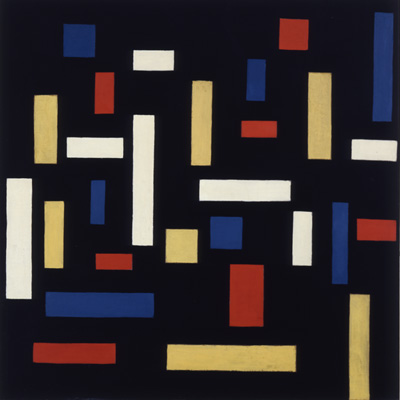
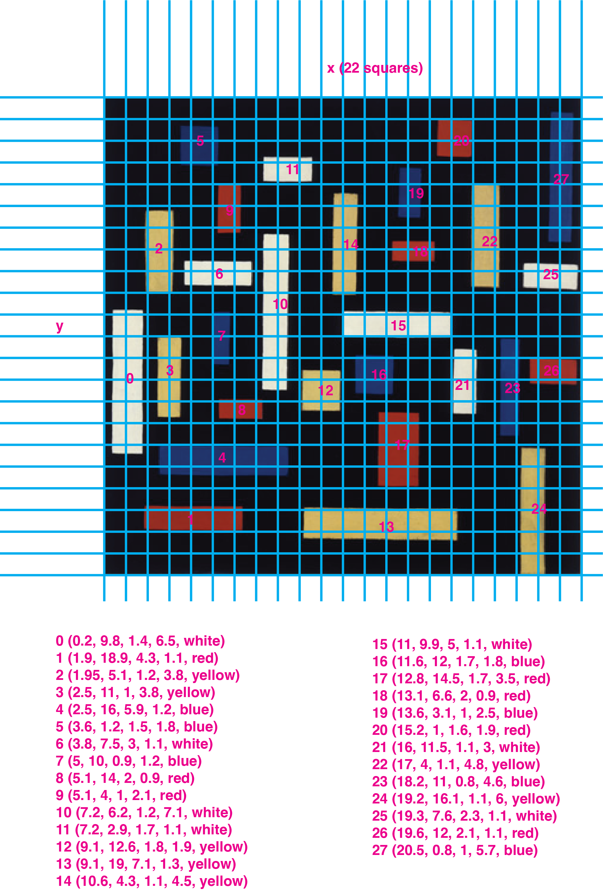

I chose an artwork by Theo van Doesburg called Composition VII (1917). I like that it has colors that pop out and a composition made of randomly but harmonically positioned rectangles.
To start, I identified two layers: the background and the foreground. I already start thinking that I can add an animation layer in which the rectangles shrink and expand as if they disappear and appear from the canvas. Maybe, if it could also be nice to make the viewer a participant in this phenomenon by allowing them to trigger a faster response on hover. Anyways, these are ideas I will execute later. For now, I plan the execution of the first two layers:
The sketch below shows how I use this initial information to add the artwork's base components.
I refactor the code using variables and variables, loops, and functions. Furthermore, I improve the artwork's look and feel by using colors that are closer to the original.
Now I'm going beyond the static artwork. I want to make it feel alive by adding motion. As I said earlier, I have this thought of making individual shapes shrink and expand which I want to explore.
Can we involve the viewer in the artwork? We certainly can by using interaction. For Composition VII, I think it would be cool to affect the animation somehow when the user hovers and clicks. I'm thinking that hovering should enlarge the shape and clicking should make it bounce. Let's see how that works. By the way, from the experiments in Class 4, I decided that asynchronously changing shapes' sizes look nicer. Therefore, I will stick with that design choice from now on.
Click on this link to see the finished artwork resulting from adding sound and final details.
Sound can make an artwork even more immersive. I think Composition VII could profit from a peaceful vibe that accompanies the shrinking and expanding motions. When the user interacts we can add more vibrant notes to call the user's attention.
Finally, I want to improve the look of the artwork because so far it is looking too plain to my taste. This can be achieved by using more layers. I think back to how painters apply their brush strokes to create a nice texture. Specifically, I will simulate the painter when drawing the background and each shape. To do this, I splat rectangles of different sizes and opacities until I reach the desired one. Then I use a Gaussian filter to smooth out any remaining roughness.
It is a good habit to reflect on the job done. What did you learn? What ideas have you got? What frustrated you? In my case, I don't usually experiment with sound, and doing it here was quite exciting. I want to try more ways to make the artwork more vibrant through a synergy between what we see and what we hear. Sound can make an artwork even more immersive. I think Composition VII could profit from a peaceful vibe that accompanies the shrinking and expanding motions. When the user interacts we can add more vibrant notes to call the user's attention.